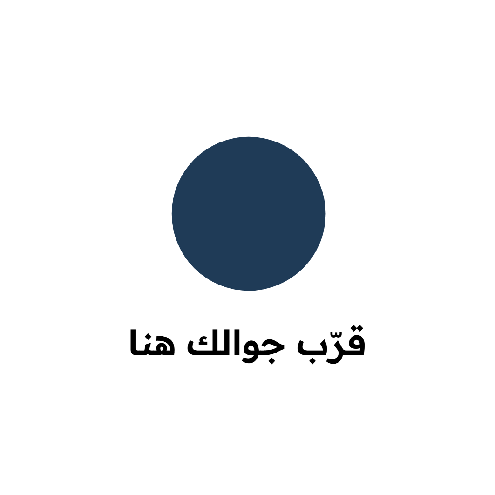

telegram-avatar · 1024×1024
telegram-pinned · 1280×720
منيو، تقييم، واي فاي بلمسة
رد خلال ساعة على الواتساب أو التليجرام،
من 9 الصبح لين 11 الليل
telegram-square · 1080×1080
منيو، تقييم، واي فاي بلمسة
رد خلال ساعة على الواتساب أو التليجرام،
من 9 الصبح لين 11 الليل
telegram-m1-menu · 1080×1080 · #مطاعم
زبونك جالس، والمنيو الورقي
عند الطاولة الثانية.
يقرّب جواله من الستاند
أو يمسح الباركود، والمنيو قدامه.

telegram-m2-review · 1080×1080 · #مطاعم
تبغى الزبون يلقى
صفحة تقييمك بسهولة؟
ستاند على الكاشير يفتح
صفحة تقييم محلك على قوقل مباشرة.

telegram-m3-wifi · 1080×1080 · #مطاعم
«وش باسوورد الواي فاي؟»
كلمة المرور جاهزة للنسخ

telegram-m4-guide · 1080×1080 · #مضيفين
ضيفك وصل الساعة 1 الليل
وما يدري وين المكيف
ولا كلمة الواي فاي؟
ملصق في الشقة يفتح دليل الضيف:
الواي فاي، والتكييف، والشروط، والعنوان.
telegram-m5-checkout · 1080×1080 · #مضيفين
الضيف طالع؟
يقرّب جواله من الملصق ويضغط زر التشيك أوت،
وتوصلنا الرسالة ونبلغك من جوال الشركة،
عشان تجهز التنظيف.

telegram-m6-maintenance · 1080×1080 · #مضيفين
المكيف وقف؟
بلاغ صيانة جاهز، ويوصلنا ونحوّله لك